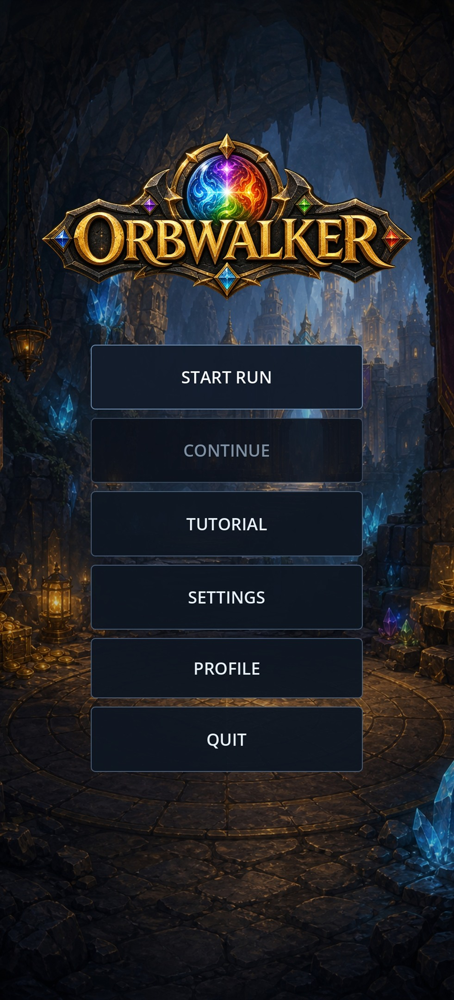
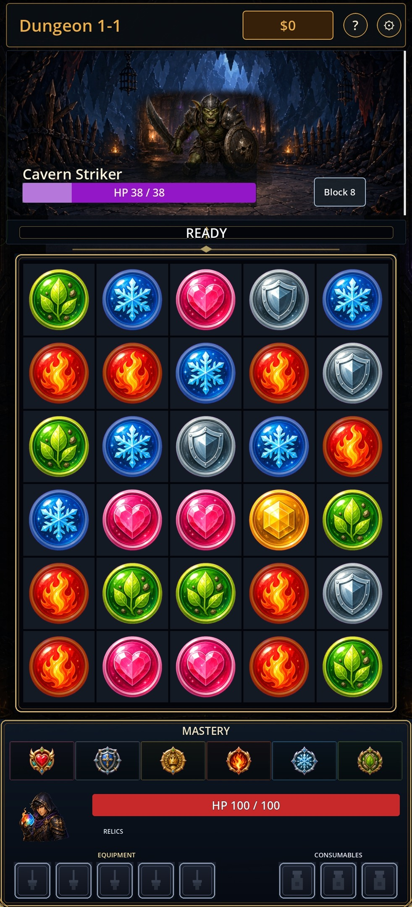
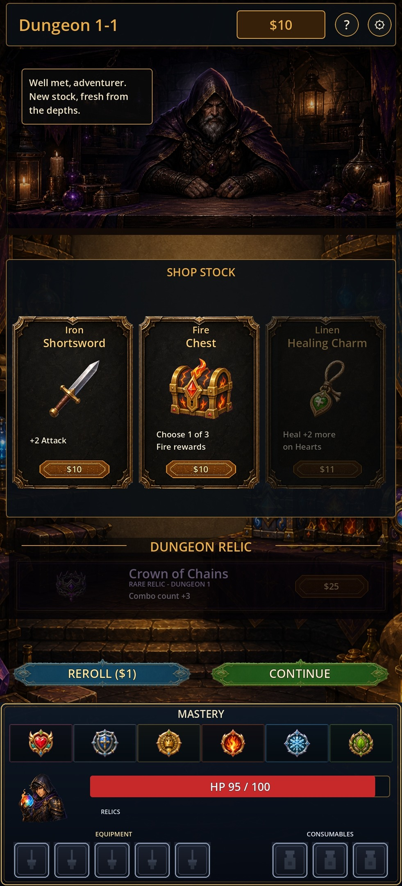
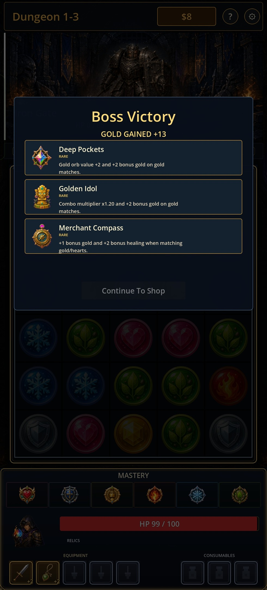
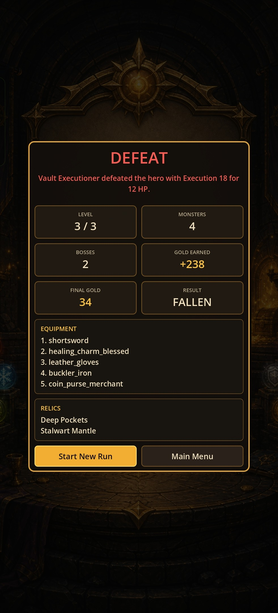

Captured
Main Menu
Use as the first itch screenshot or page hero crop. Shows the logo and primary demo actions clearly.
Manipulate a living orb board to strike, block, heal, and snowball your build through a compact dungeon run.
Orbwalker.apkOrbwalker-web-html-0.1.0-demo.zip, containing index.html and the required Godot Web files.com.artifisi.orbwalker0.1.0-demo / version code 2Accepted screenshots are from the installed Android demo build on 2026-05-27 at 1080 x 2376. Use this set for the first public itch.io page pass.

Use as the first itch screenshot or page hero crop. Shows the logo and primary demo actions clearly.

Shows enemy intent, board readability, mastery row, HP, and inventory rails in the exact Android build.

Shows the merchant, three stock cards, dungeon relic offer, reroll, continue, and persistent player HUD.

Shows boss victory and relic reward choices. Prefer a selected-relic variant later if a clearer enabled Continue state is needed.

Shows the run ending cleanly with stats, equipment, relics, and retry/menu actions visible.